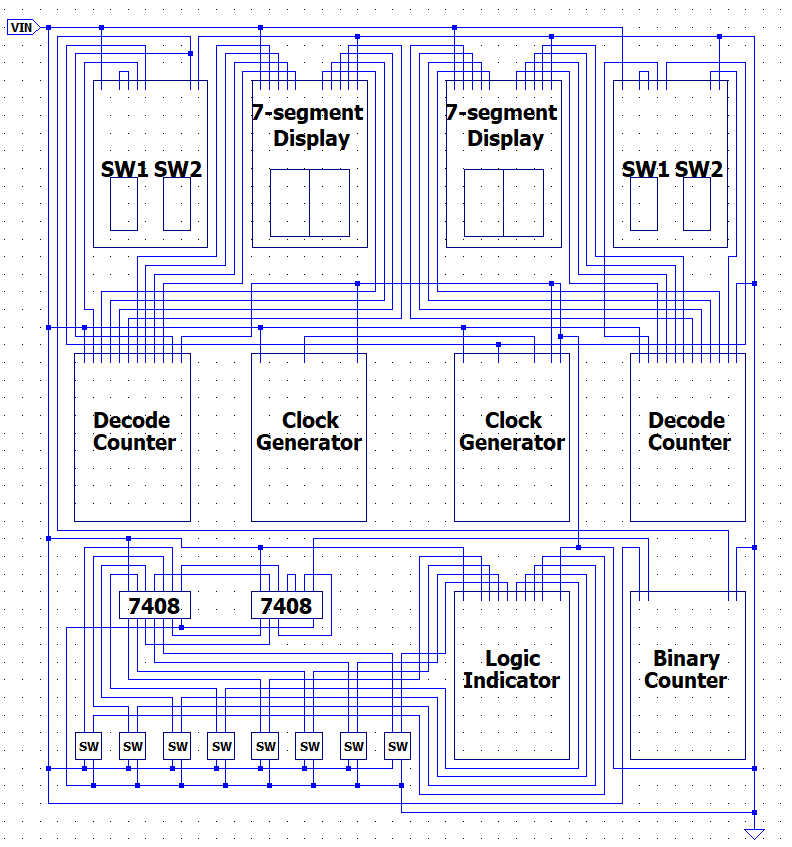

Arduino Electronic Piano
A hands-on embedded system project developed for the Electronics Engineering Laboratory. This project demonstrates the integration of hardware interrupts, frequency-to-tone mapping, and basic memory storage.
Hardware Design

Figure 1: Circuit Schematic (I/O Mapping)

Figure 2: Final Assembled Prototype
Functionality Demo
Demonstrating real-time play and record/playback features.
Project Reflections & Takeaways
- Hardware Integration & Floating Pins: During the initial setup, I encountered signal instability due to "floating" digital pins. I successfully resolved this by implementing pull-down resistors, ensuring stable input signals from the push buttons.
- Software Logic & State Management: I discovered that conflicting background processes could interrupt the buzzer output. By optimizing the program execution priority, I ensured smooth transitions between the recording and playback modes.
- Practical Debugging Skills: This project significantly enhanced my debugging abilities. I learned to use a multimeter for hardware verification and the serial monitor for real-time software tracing to identify bottlenecks.
- System Reliability: Beyond basic circuit design, I realized that building a robust system requires considering environmental noise and software timing, which are fundamental to reliable embedded system design.